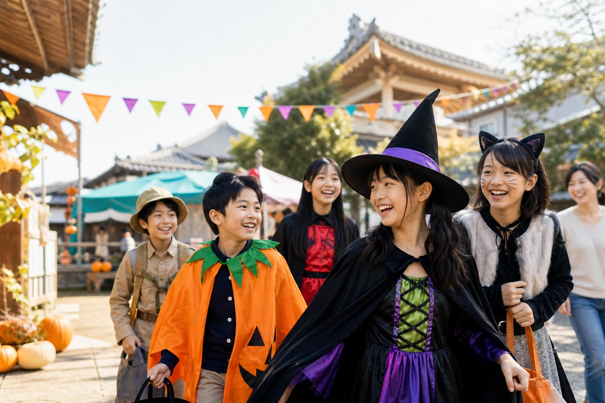
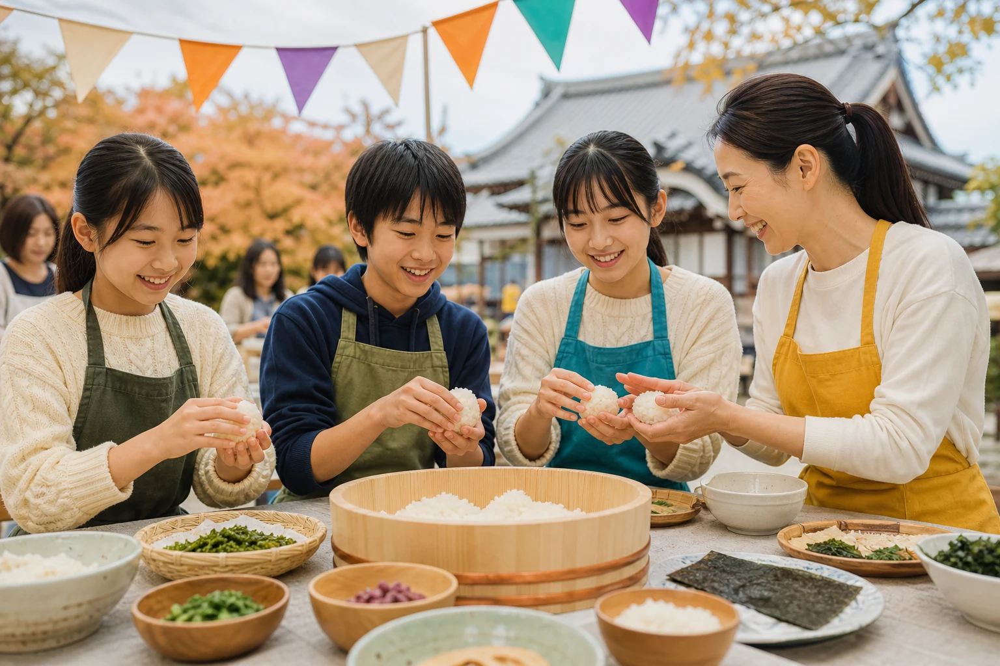
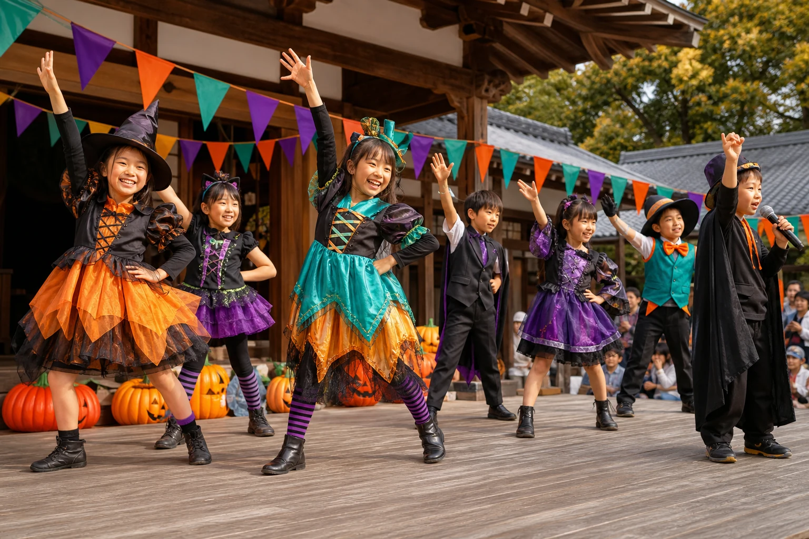

食育マルシェ
キッチンカー、米粉ドーナツ、手作り菓子など。地域のおいしいものと出会おう。
FOOD MARCHE
ABOUT THE FESTIVAL
「食」を通じて命の大切さを知り、体験を通じてまちの人と出会う。
子どもも大人も、笑顔でつながる一日。おいしいもの、手を動かす体験、ステージの音、そして仮装。お寺の境内いっぱいに、春日井の「楽しい」が集まります。
WHAT'S WAITING?
気になる体験を見つけてみよう。
キッチンカー、米粉ドーナツ、手作り菓子など。地域のおいしいものと出会おう。
FOOD MARCHEフリーマーケットや地域交流ブース。誰かの「好き」とつながる場所。
COMMUNITY MARKET子どものダンスや合唱、地域のみなさんによるパフォーマンスで盛り上がろう。
LIVE STAGE食にふれるワークショップ。つくって、触れて、体験しながら学ぼう。
FOOD WORKSHOP保育士・管理栄養士のお話。「いただきます」の意味や食と健康を知ろう。
MINI TALKとびきりの仮装で遊びに来てね。子ども向け参加企画も予定しています。
HALLOWEEN FUN※出店・体験内容は変更になる場合があります。詳しい内容は決まり次第、このページでご案内します。

つくる体験から、「いただきます」の向こう側を見つけよう。

地域のお店や人との出会いも、お祭りの大切な体験です。

ダンス、合唱、パフォーマンス。ステージから元気を届けよう。
SAVE THE DATE
※駐車台数には限りがあります。雨天時の対応は現在確認中です。
BEFORE YOU COME
普段着でも大歓迎です。仮装する場合は、歩きやすく視界を妨げない服装でお越しください。
入場は無料です。体験企画ごとの予約・参加費は準備中です。決まり次第、このページでご案内します。
雨天時の対応は現在確認中です。決まり次第、このページでご案内します。
駐車場はありますが、台数に限りがあります。詳しい案内は決まり次第、このページへ掲載します。
SEE YOU AT THE FESTIVAL
10月31日、泰岳寺でお待ちしています。
詳しい内容は決まり次第、このページでご案内します。